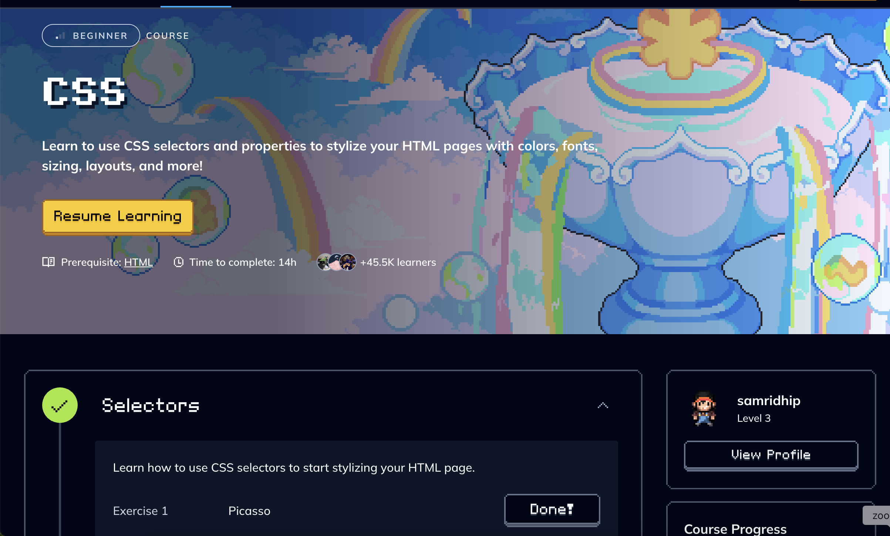
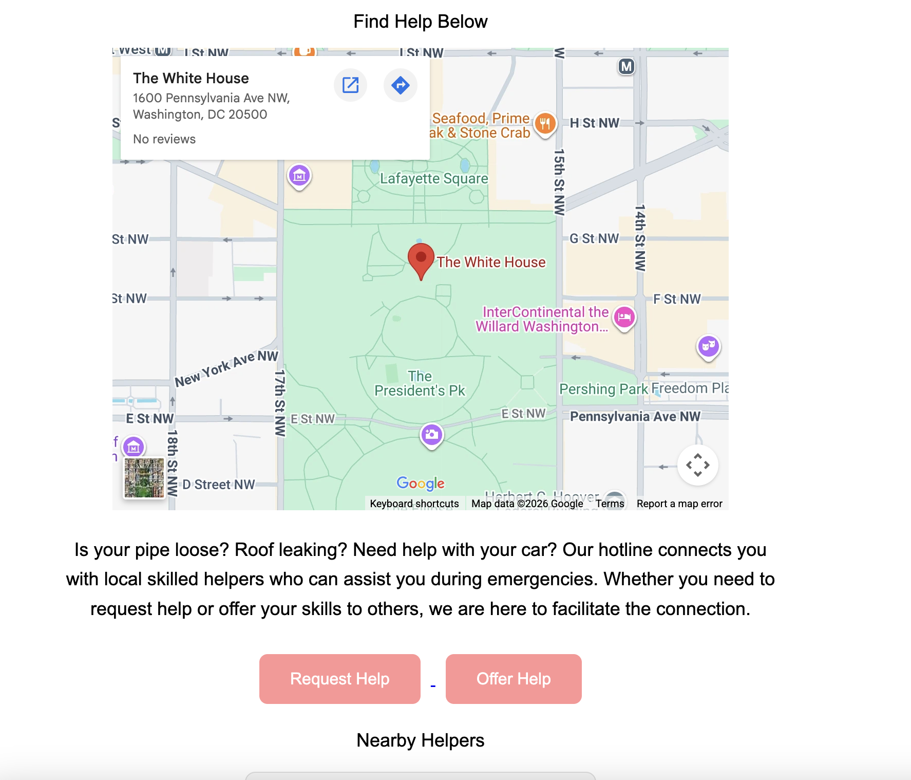
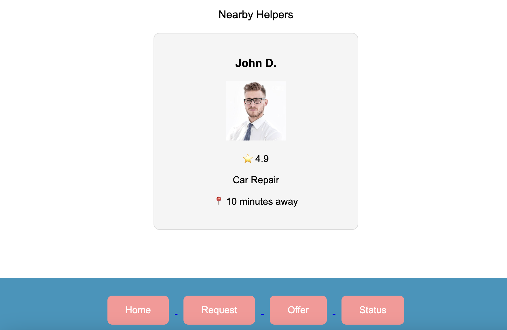

TECH TEEN LAUNCHPAD
From starting with zero coding experience to building websites, learning new tools, and creating real-world projects.
When I first started Tech Teen Launchpad, I had no background in coding. HTML, CSS, Python, and GitHub were all completely new to me.
Throughout the program, I learned the fundamentals of programming and web development. I learned how HTML creates structure, how CSS brings a website to life, and how Python can be used for logic and problem-solving.
Through hands-on activities, Codedex, presentations, and projects, I became more comfortable experimenting with code, debugging, and trying again when something did not work.
One of the biggest parts of my journey was helping build the Local Skill Emergency Hotline. This project allowed me to apply what I learned to something designed to help a community.
Explore My Journey ↓🛠️ WHAT I LEARNED
Throughout Tech Teen Launchpad, I learned different technologies and tools that helped me develop both technical and creative skills.
I learned how HTML provides the structure of a webpage and practiced using headings, links, images, buttons, and sections.
I learned how CSS transforms a basic webpage through colors, fonts, spacing, layouts, and design.
Python introduced me to programming logic, problem-solving, and debugging.
I learned how Figma can be used to plan and visualize digital designs before building them.
VS Code became one of the main tools I used to write, organize, and edit my code.
I learned how GitHub can be used to store, manage, organize, and share projects online.
I use Canva to create presentations and visual materials, including projects for my nonprofit, MedYouCare. I plan to continue using it for future work.
📈 MY PROGRESS
I started Tech Teen Launchpad with no coding experience, so everything from HTML and CSS to Python was new to me.
As I practiced, I became more comfortable writing code, fixing mistakes, and creating webpages on my own.
Building the Local Skill Emergency Hotline was one of the biggest parts of my growth because I was able to apply what I learned to a real project.
I still have a lot to learn, but I now feel much more confident exploring technology and creating things on my own.
🚀 WHAT I CREATED
These projects gave me opportunities to research, practice coding, design, and apply what I learned.
01 / RESEARCH & PRESENTATION
I researched Daniel Ek, learned about his work in technology, and presented the information in an organized and engaging way.

02 / CODING & PRACTICE
Codedex gave me hands-on opportunities to practice programming and experiment with different concepts.
I worked with Python and CSS while becoming more comfortable reading, writing, and debugging code.

03 / FINAL PROJECT
My largest project was the Local Skill Emergency Hotline, a community-based website where people can offer skills or request help.
This project allowed me to bring together what I learned about HTML, CSS, design, and website structure.
View on GitHub →
04 / DESIGN & PLANNING
I planned the structure of the Local Skill Emergency Hotline before building it. Creating an app map helped me understand how the pages would connect and how users would navigate the website.
🔮 WHAT COMES NEXT
Tech Teen Launchpad gave me my first real experience with coding and deepened my interest in technology.
One of my goals is to use what I have learned to create a website for my nonprofit, MedYouCare. I also want to continue using Canva to create visual materials for it.
In the future, I want to keep exploring both medicine and technology. I have always been interested in medicine, while this program gave me the opportunity to explore coding and discover another field I enjoy.
I plan to keep learning, building projects, and seeing where these interests take me.
✨ REFLECTION
I used ChatGPT to help with CSS, website planning, troubleshooting, and organizing ideas for my portfolio.
I still made the decisions about what I wanted my website to look like and what I wanted to include. Using these tools helped me understand the process and feel more confident experimenting with my own ideas.